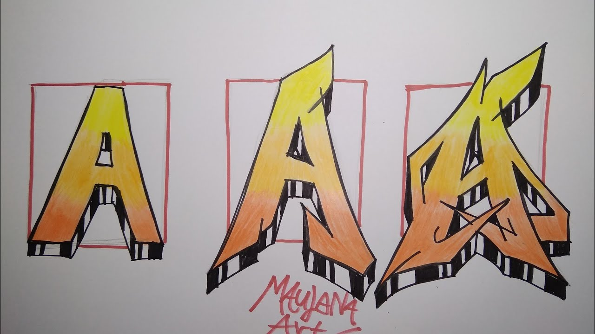
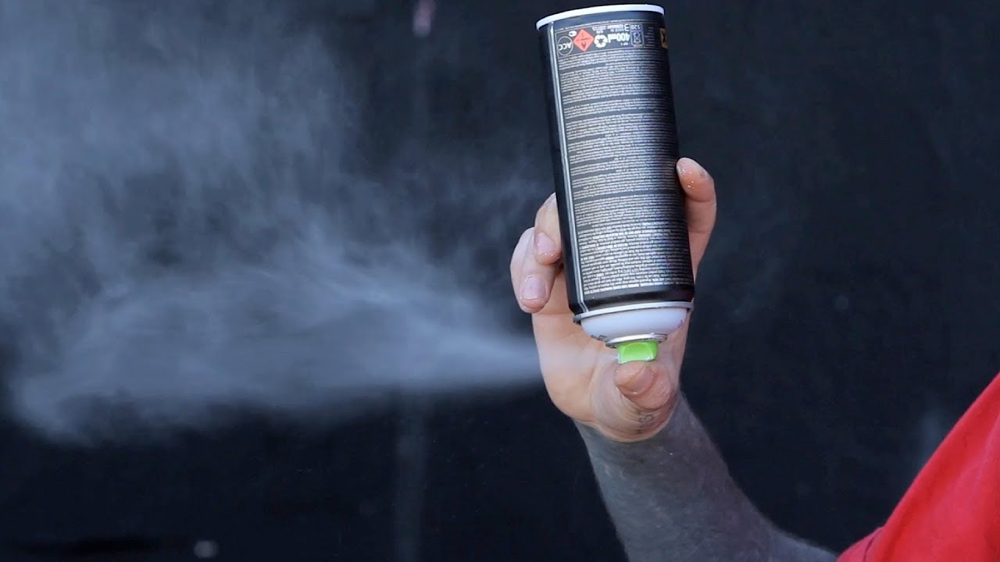
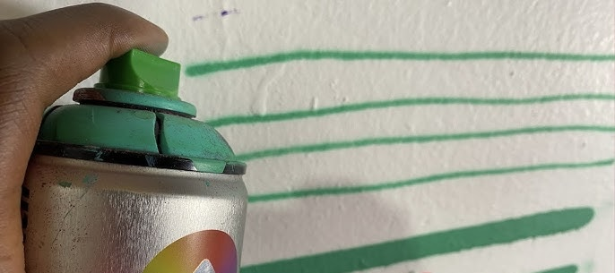

Tips for beginners
1.Practice the basic techniques, don’t start big! Try basic lettering first and gradually move your way up.
2.Plan your design! Try to design your plan on paper before starting a painting. It also gives you more room to make changes, if needed, before you start painting large
3. Forget about color. Start with understanding the shapes and flow before thinking about the color scheme
4. start with cheap materials. Since you’re still a beginner you don’t want to spend allot of money and waste it on some sketches.
5. Last but not least find inspiration but do not copy. Every artist has his own style so you will probably fail trying to copy another artist, or succeed but not being original
Tricks
1.Keep your caps clean. To do this turn your can upside down and spay. When it stops spraying paint and only releases gas you’re good. This wil prevent the paint from dring in your cap
2.Empty can? remove the cap and turn it upside down on a hard flat surface. Give it a good stomp and try again.
3.If you forgot your diffrent caps dont worry. By applying certain amounts of pressure you can achieve diffrent line thickness. applying allot of pressure wil give you a thicker line(fat cap) and applying less pressure will give you a thinner line(skinny cap). 